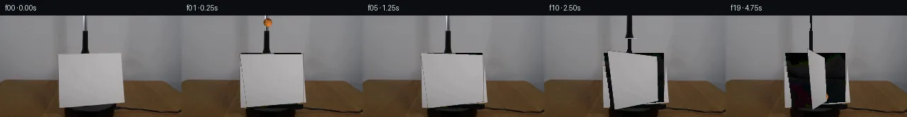

![首帧]()

Round 00
2026-11-04T20:30:46.902521+00:00像素候选变化代码 +350/−0inspection 更新
pixels 0c78ca4f1c354dc6 · code e9e795dc22610b16
查看本轮 generate.py 真实 diff
--- previous/generate.py
+++ current/generate.py
@@ -0,0 +1,350 @@
+#!/usr/bin/env python3
+"""PixelWorld-Text case_0005: grabber lowers an orange tennis ball behind a
+clockwise-yawing cardstock; local numpy/PIL pixel operations only.
+
+Frame 00 is an exact copy of first_frame.png; frames 01-19 are rendered by
+compositing layers: static plate (mirror-inpainted wall/wood/platform),
+ball shadow, orange ball, extracted grabber sprite, projectively yawed card.
+"""
+from pathlib import Path
+import numpy as np
+from PIL import Image, ImageDraw
+import artifact_io
+
+ROOT = Path(__file__).parent
+H, W = 144, 256
+rng = np.random.default_rng(5005)
+
+# ---------------------------------------------------------------- geometry
+# cardstock quad in frame 0 (screen corners for canonical (u,v) 0..1)
+QUAD = np.array([[82., 54.], # A top-left
+ [172., 54.], # B top-right
+ [172., 123.], # C bottom-right
+ [92., 130.]]) # D bottom-left
+
+
+def homography_from_corners(src, dst):
+ """8x8 DLT homography mapping homogeneous src (x,y,1) -> dst."""
+ M = np.zeros((8, 8)); z = np.zeros(8)
+ for i, ((x, y), (X, Y)) in enumerate(zip(src, dst)):
+ M[2*i] = [x, y, 1, 0, 0, 0, -X*x, -X*y]
+ M[2*i+1] = [0, 0, 0, x, y, 1, -Y*x, -Y*y]
+ z[2*i], z[2*i+1] = X, Y
+ h = np.linalg.solve(M, z)
+ return np.array([[h[0], h[1], h[2]],
+ [h[3], h[4], h[5]],
+ [h[6], h[7], 1.]])
+
+
+def apply_h(H, pts):
+ pts = np.atleast_2d(pts)
+ q = pts @ H[:, :2].T + H[:, 2]
+ return q[:, :2] / q[:, 2:3]
+
+
+unit = np.array([[0., 0.], [1., 0.], [1., 1.], [0., 1.]])
+H0 = homography_from_corners(unit, QUAD) # canonical -> screen
+H0i = np.linalg.inv(H0)
+
+# ------------------------------------------------------------- load frame0
+f0 = np.array(Image.open(ROOT / 'first_frame.png').convert('RGB'))
+assert f0.shape == (H, W, 3)
+
+# ------------------------------------------------------- build inpaint mask
+mask = np.zeros((H, W), bool)
+
+# card polygon (with 1 px margin)
+poly = [(p[0] - 1, p[1] - 1) for p in QUAD]
+imgm = Image.new('L', (W, H), 0)
+ImageDraw.Draw(imgm).polygon(poly, fill=1)
+mask |= np.array(imgm, bool)
+# extend bottom sliver where card meets platform
+ImageDraw.Draw(imgm).rectangle([90, 126, 174, 131], fill=1)
+mask |= np.array(imgm, bool)
+
+# grabber: difference vs horizontally interpolated local wall
+wall_est = np.zeros_like(f0, dtype=float)
+for y in range(56):
+ l = np.median(f0[y, 100:111].reshape(-1, 3), 0)
+ r = np.median(f0[y, 129:140].reshape(-1, 3), 0)
+ wall_est[y] = l[None, :] * (1 - (np.arange(W) - 105) / 34)[:, None] + \
+ r[None, :] * ((np.arange(W) - 105) / 34)[:, None]
+gdiff = np.abs(f0.astype(float) - wall_est).sum(2)
+gmask = np.zeros((H, W), bool)
+gmask[:56, 110:131] = gdiff[:56, 110:131] > 18
+# dilate 1 px
+for dy, dx in ((1, 0), (-1, 0), (0, 1), (0, -1)):
+ gmask[1:, :] |= gmask[:-1, :] if (dy, dx) == (1, 0) else False
+gm = np.zeros((H, W), bool)
+gm[:-1, :] |= gmask[1:, :]
+gm[1:, :] |= gmask[:-1, :]
+gm[:, :-1] |= gmask[:, 1:]
+gm[:, 1:] |= gmask[:, :-1]
+mask |= gm
+
+# ------------------------------------------------- mirror inpaint the plate
+plate = f0.copy()
+hashj = (rng.integers(-1, 2, size=(H, W))).astype(int)
… diff truncated; 263 more lines …